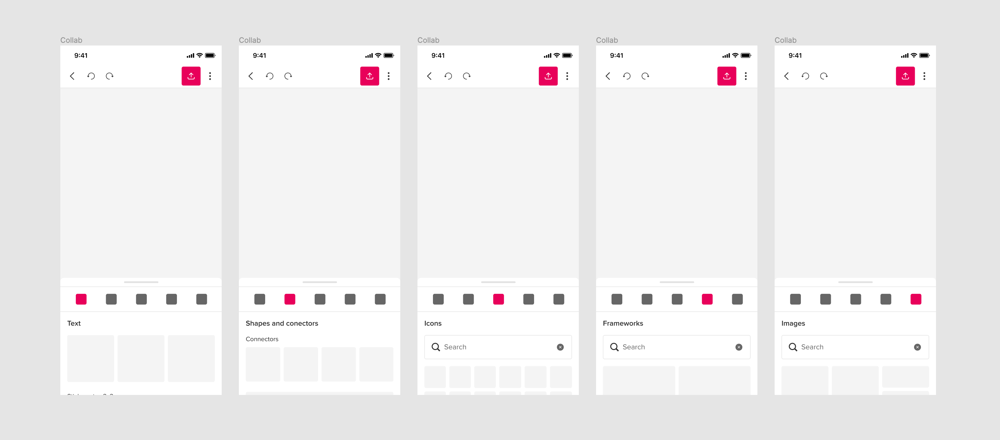

Evolving Hospitality Industry

At Mural my expertise is required across a multitude of projects with the primary focus being the Cross Device team.
One of the first projects that I added value to when I joined Mural was to help normalize the mobile application.
The challenge I encountered here was large (up to 84 inches in some cases) coupled with the fact that there was no previous existing documentation. The solution here was to work with the team to help avoid design debt and create a reusable component system that not only normalized but also optimized
When we took a step back we realized that we needed to normalize not only touch areas but most of the brand (colours, fonts, sizing etc…).
Once the team had agreed to this, we on-boarded the engineers and began creating the future of Mural.
We started by implementing space to all button, yeah... Bigger is better for mobile devices.
Modals; the most complex part. In the Mural use case, you have to allow the user to visualize the content they're creating, so we also normalize the idea of "dividing" the screen on 3; 2 parts to visualize content, and 1 part to see the tools you're working with. Something similar a keyboard would do on screen, you want to see the output of what you're typing, right?
We implemented and released
Here a few screenshots of the implemented designs
Big devices for hybrid collaboration
I can't tell much about this project, because is still in progress. After all the vaccination processes, the world it's a bit more calm, and a few companines are starting to work in Hybrid; which mean that a few people stayed remote, and some other have started to go to the office.
In general, this is creating some new use cases, because people in offices wanted to use the big screens for in-person collaboration, so we needed a way to send the Murals to those "public" devices.
We are currently validating designs with users.
In this project I work together with: Samantha Cicconi, as a Product Manager.